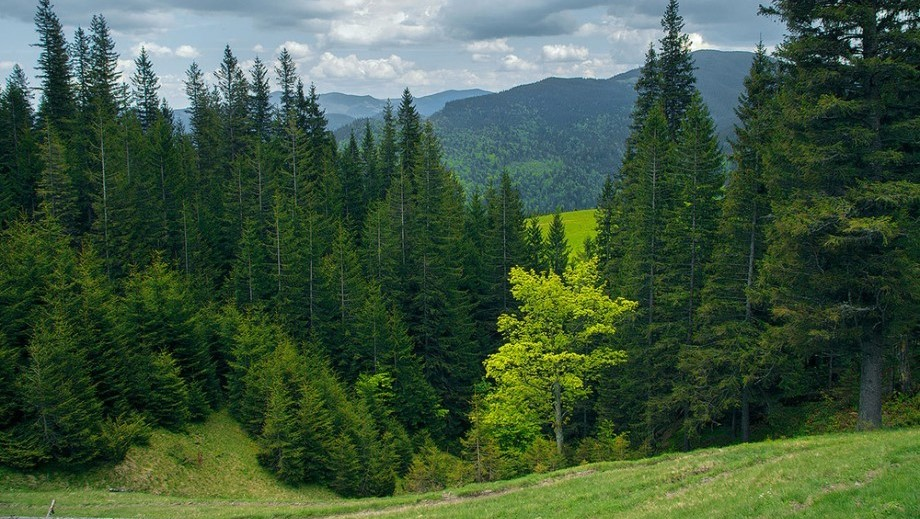
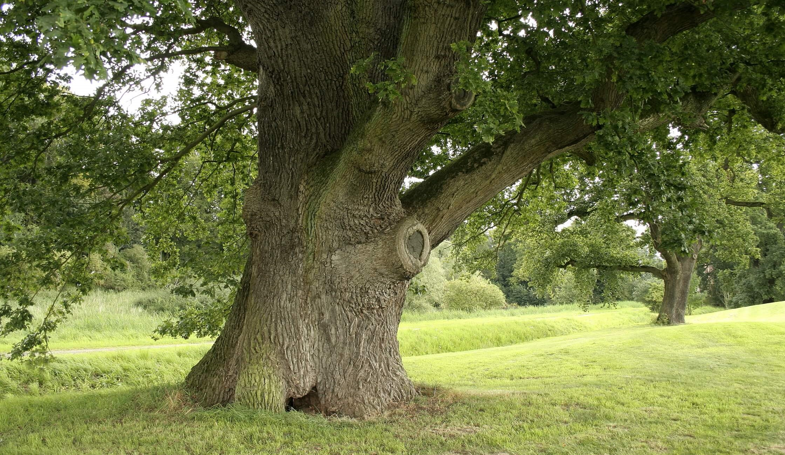
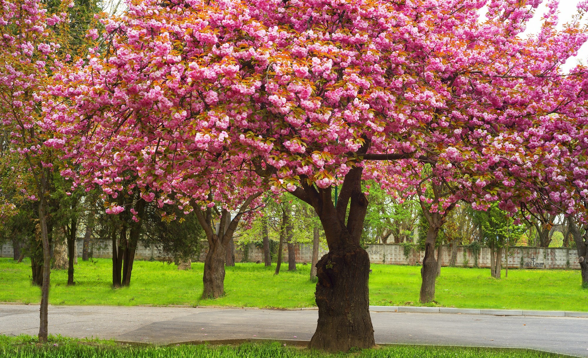
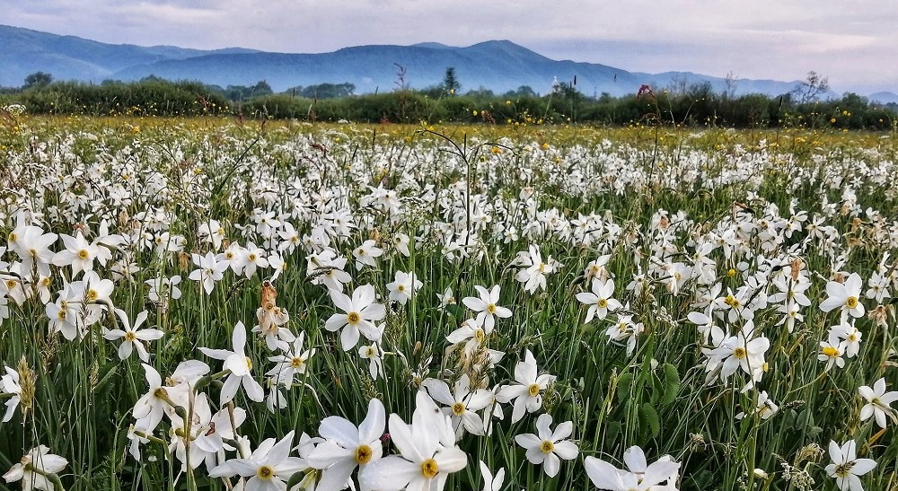
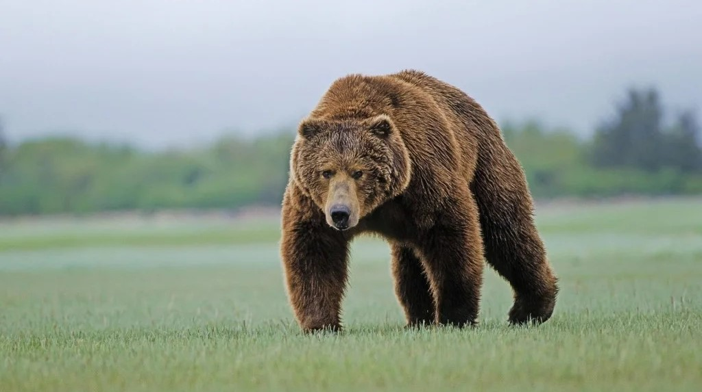
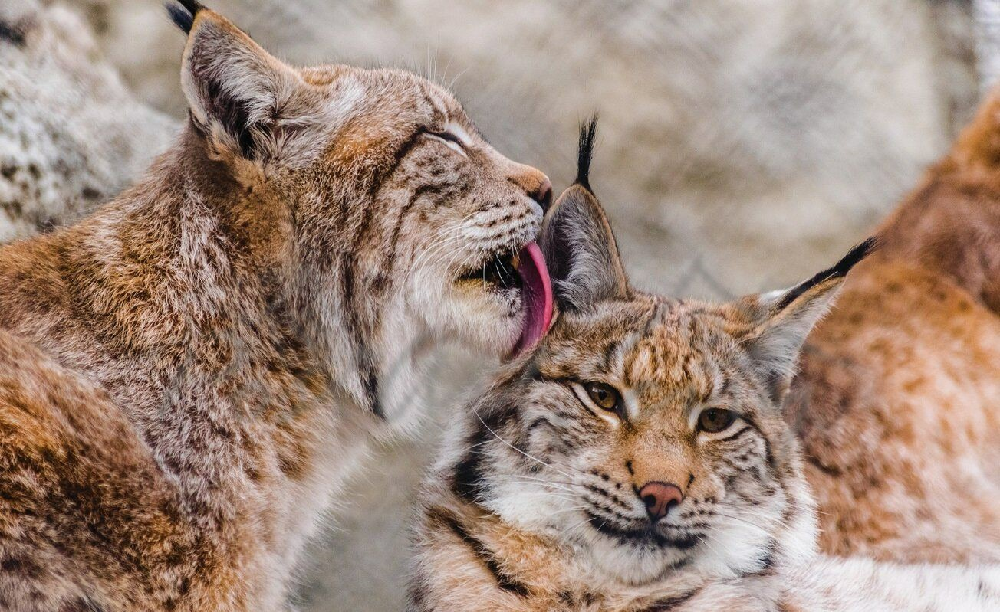
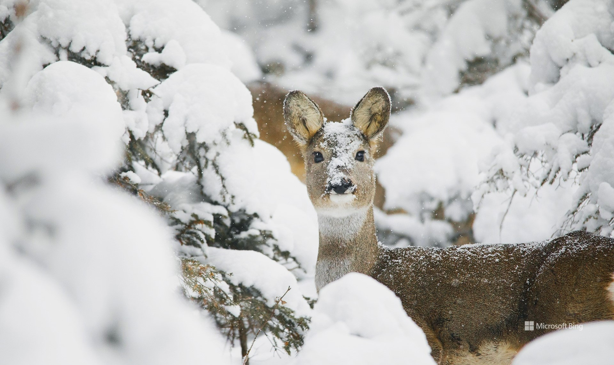

Про головне
Природа в Карпатах напрочуд багата і красива. Тут налічується
понад 2000 видів рослин, сотні різновидів тварин та птахів. За
підрахунками вчених, на карпатський регіон припадає близько 2/3
усієї біорізноманіття України. Це не дивно: лісисті та кам’янисті
схили перемежовуються глибокими долинами, а передгір’я плавно
переходять у степовий ландшафт. Розмаїття локацій створює ідеальні
умови життя всіх категорій тварин.

Флора
У Карпатах простежується чітке вертикальне зонування — рослини
карпатських гір освоїли кожен висотний рубіж. У низинах строкаті
луки перемежовуються острівцями дібров. У передгір’ях царюють
дуби скельні, Бургундські, Далешампе, граби. Вік деяких місцевих
дерев перевищує 1000 років. Розгляньмо деяких представників
флори Карпат:
Дуб
Дуб - відоме кожному карпатцю дерево, яке досягає у висоту 30
метрів. Обхват стовбура - до 9 метрів. Деяким місцевим дубам
більше 1100 років. Це означає, що дерева застали княжу епоху. У
Карпатах можна зустріти дуб звичайний і дуб скельний. Як
правило, він росте в змішаних лісах, але зустрічаються і цілі
дубові ліси.

Сакура
Сакура є найбільш поширеною у місті Мукавево, тут її можна
побачити вздовж вулиць ,а також у парках і скверах Сакура
зацвіла вперше у листопаді 2014 року. З тих пір дерева тішать
мешканців Мукачева красою свого цвіту.

Нарцис
Завдяки м’якому клімату та багатому ґрунту в передгір’ях багато
рукотворних садів, полів, виноградників. Весною розкішно
виглядає закарпатська Долина нарцисів, яка вкривається килимом
квітів у другій половині травня. Унікальні рослини, представлені
тут великою популяцією,які виростають лише в цьому регіоні.

Фауна
Фауна Карпат не менш різноманітна, ніж флора. На лісових стежках
ви зустрінете безліч тварин, що мешкають тільки в дикій природі,
а отже, екзотичних для більшості міських жителів. В українських
горах налічується близько 80 видів ссавців. Розгляньмо
найцікавіші з них!
Бурий ведмідь
Найбільшими, але водночас рідкісними мешканцями Карпат,
вважаються бурі ведмеді. Косолапі харчуються рибою, комахами,
горіхами, медом, ягодами та деякими рослинами. В українських
горах налічується лише 110–130 особин, тому ймовірність зустріти
ведмедя, особливо на вторинних туристичних маршрутах, дуже мала.

Рись
За даними Всесвітнього фонду природи рись в Карпатах зазвичай
мешкає вище позначки у 1000 метрів. Відпочиваючи на скелях і
камінні, поза досяжністю людини, рись все одно спостерігає і
цікавиться людьми. Популяція рисі в Україні оцінюється приблизно
в 500 особин.

Козуля
Козуля – вид копитних, суцільний ареал якого в лісостеповій зоні
був розірваний мисливством і хаотичним сільськогосподарським
освоюванням місцевостей. Розрив ареалу привів до збільшення
відмінностей двох біологічних груп тварин: західно-європейської
і східно-сибірсько-кавказької. Ззовні – по кольору та вигляду –
ці козулі не дуже відрізняються, проте маса європейських в 1,5-2
рази менша, ніж сибірських.

Висновки
Поїздка до Карпат — шанс поринути у казковий світ дикої природи.
Будучи уважним, під час звичайної прогулянки в лісі ви зможете
зустріти представників місцевої флори та фауни, включаючи рідкісні
червонокнижні види. Щоб помилуватися цвітінням трав, чагарників,
краще приїжджати до Карпат з середини весни до середини літа. У
липні-серпні починають масово дозрівати їстівні ягоди, наприклад,
чорниця. Для спостереження за тваринами та птахами підходить
будь-яка пора року. Найзручніше робити це у теплі місяці, але навіть
взимку у гірських лісах можна побачити глухарів, орлів, інших
представників фауни. Крім того, засніжені гірські схили ідеально
підходять для катання на лижах та сноубордах, повільних кінних
прогулянок.